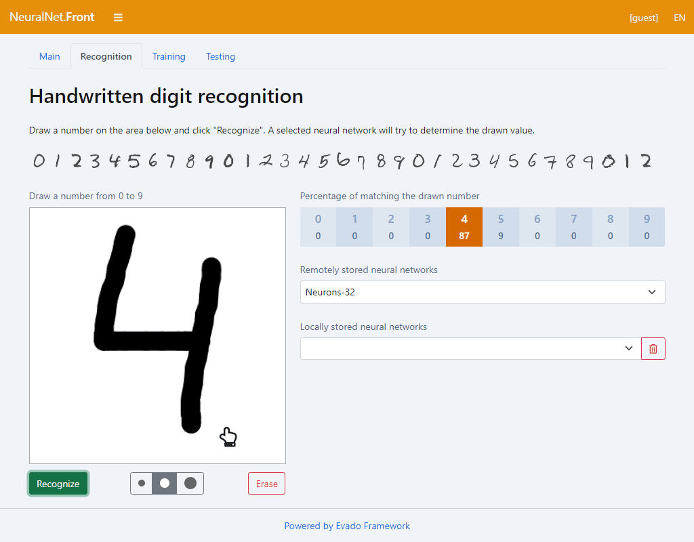

Neural Net
Приложение для распознавания рукописных цифр
Обучение, тестирование и использование нейронных сетей на JavaScript

Особенности реализации
Обучение и тестирование нейронной сети в браузере.
Обширная база данных (MNIST) из нескольких десятков тысяч образцов.
Сохранение обученных сетей в локальное хранилище.
Открытый исходный код приложения.
Подробно
Онлайн демо
Открытый код